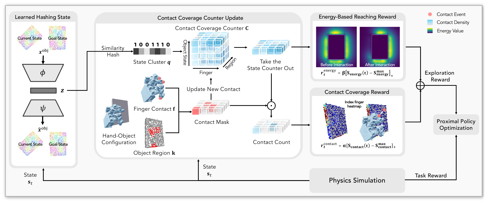

Contact-driven exploration
State-conditioned contact coverage guides exploration toward novel finger–object contacts.
ContactExplorer promotes diverse finger–object interactions by tracking state-conditioned contact coverage during exploration.
State-conditioned contact coverage guides exploration toward novel finger–object contacts.
Evaluated on object singulation, retrieval, in-hand reorientation, and bimanual manipulation.
A vision-based policy distilled from simulation performs real-world object singulation.
We distill the simulation oracle policy into a vision-based policy and evaluate real-world object singulation with randomized target objects. Videos are shown at 1x speed.
Reinforcement learning explores effectively in domains such as Atari games, navigation, and locomotion, where novelty over states or dynamics is a sufficient signal. In contrast, dexterous manipulation requires rich physical hand–object interactions, but existing methods often suffer from unstable contact-based novelty signals, inefficient distance novelty signals, or reliance on task-specific priors. We propose ContactExplorer, a general exploration method for dexterous manipulation tasks. ContactExplorer represents contact as the intersection between object surface points and hand keypoints, encouraging dexterous hands to discover diverse and novel contact patterns, namely which fingers contact which object regions. It maintains a contact counter conditioned on discretized object states obtained via learned hash codes. This counter is leveraged in two complementary ways: (1) a count-based contact coverage reward that promotes exploration of novel contact patterns, and (2) an energy-based reaching reward that guides the agent toward under-explored contact regions. We evaluate ContactExplorer on seven contact-rich manipulation tasks and five dexterous hand embodiments. Experimental results show that ContactExplorer substantially improves sample efficiency and success rates over existing exploration methods, that it reduces the need for task-specific priors, and that it remains effective across hand embodiments and transfers to the real world.
Reinforcement learning explores effectively in domains such as Atari games, navigation, and locomotion, where novelty over states or dynamics is a sufficient signal. In contrast, dexterous manipulation requires rich physical hand–object interactions, but existing methods often suffer from unstable contact-based novelty signals, inefficient distance novelty signals, or reliance on task-specific priors. We propose ContactExplorer, a general exploration method for dexterous manipulation tasks. ContactExplorer represents contact as the intersection between object surface points and hand keypoints, encouraging dexterous hands to discover diverse and novel contact patterns, namely which fingers contact which object regions. It maintains a contact counter conditioned on discretized object states obtained via learned hash codes. This counter is leveraged in two complementary ways: (1) a count-based contact coverage reward that promotes exploration of novel contact patterns, and (2) an energy-based reaching reward that guides the agent toward under-explored contact regions. We evaluate ContactExplorer on seven contact-rich manipulation tasks and five dexterous hand embodiments. Experimental results show that ContactExplorer substantially improves sample efficiency and success rates over existing exploration methods, that it reduces the need for task-specific priors, and that it remains effective across hand embodiments and transfers to the real world.
Dexterous exploration needs to discover useful physical interactions, but contact is sparse: rewarding contact alone gives the hand no guidance before it touches the object. ContactExplorer uses a state-conditioned contact counter to guide the hand toward under-explored regions and reward novel interactions when contact occurs.

We partition the object surface into regions using point positions and surface normals, and represent each finger with sparse surface keypoints. A distance–force criterion detects contact between a finger and an object region. This gives a concrete unit of exploration: a finger–region pair, rather than proximity to the object alone.
The same contact may be useful again when the object configuration or goal changes. We therefore encode point clouds of the current and goal object poses with an autoencoder, then use SimHash to assign a discrete state cluster. A counter records how often each finger–region pair has been contacted within that cluster. These counts persist across training episodes; rarely visited pairs receive higher novelty weights, while repeated contacts contribute less.
Before contact: the energy-based reaching score combines the same novelty weights with a distance-based kernel over object surface points. Nearby, under-explored regions contribute more, providing continuous guidance toward new interactions even while the hand is in free space.
When contact occurs: the contact coverage score measures the novelty of the finger–region pairs observed in contact. This contact-based signal reflects observed contacts rather than proximity alone.
For each score, we reward only improvements over its best value in the current episode, discouraging repeated exploitation of an already discovered interaction. Both rewards are computed before updating the contact counts, then added to the task reward for PPO training. Episode-wise maxima are reset at each episode boundary, while contact counts persist across episodes.
@misc{liu2026contactexplorer,
title = {{ContactExplorer}: Contact Coverage-Guided Exploration for General-Purpose Dexterous Manipulation},
author = {Zixuan Liu and Ruoyi Qiao and Chenrui Tie and Xuanwei Liu and Yunfan Lou and Chongkai Gao and Zhixuan Xu and Lin Shao},
year = {2026}
}